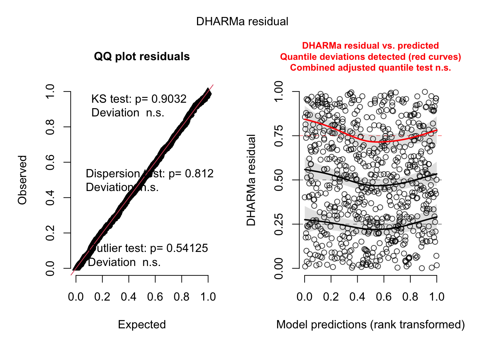
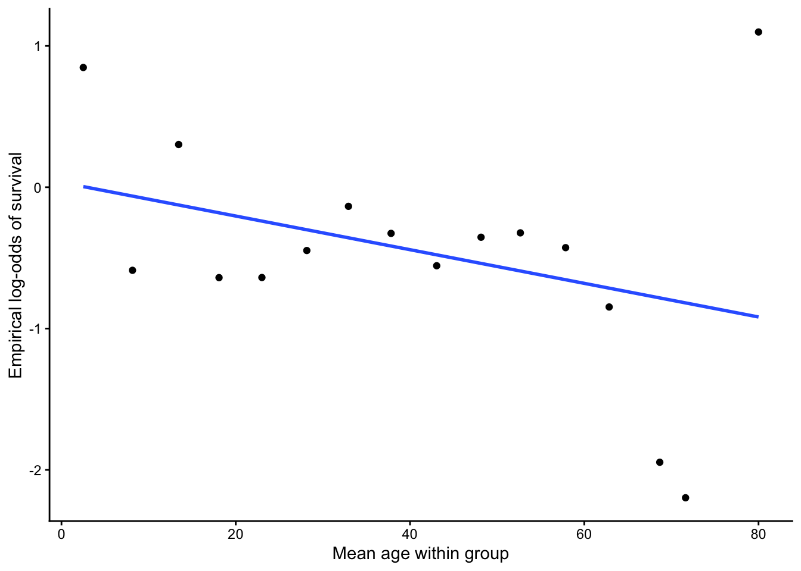
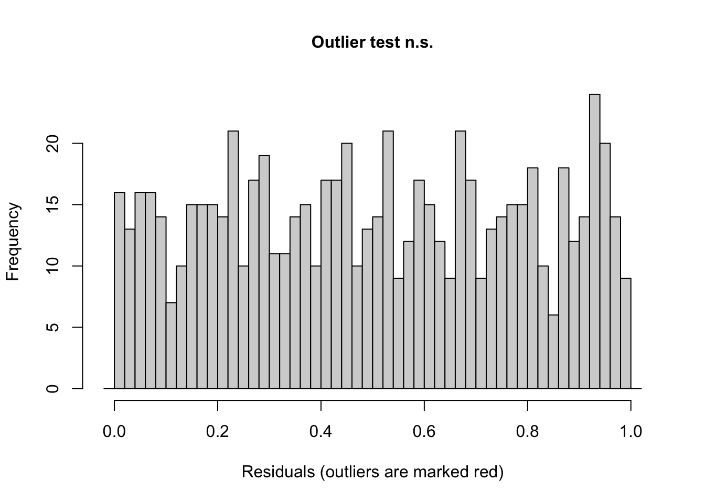
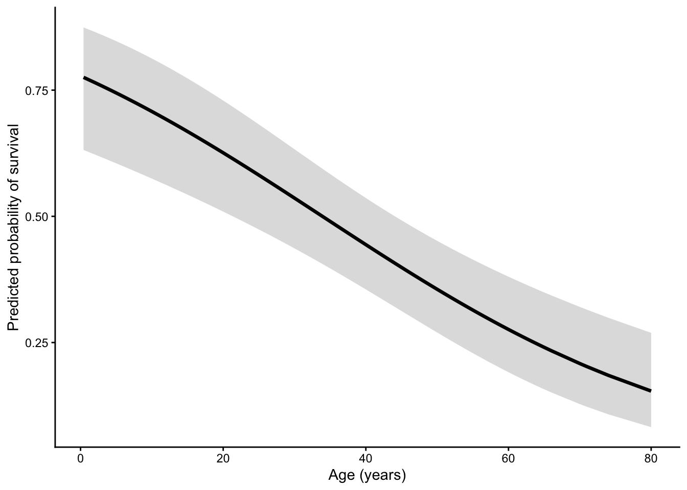

library(glmmTMB)
library(dplyr)
library(tidyr)
library(ggplot2)
library(broom.mixed)
library(performance)
library(gt)
library(readr)
library(DHARMa)
library(ggeffects)
library(titanic)Lab 4: Binary Logistic Regression — Model Specification, Comparison, and Interpretation
Part 1: Configure your project and examine the data
1.2. Load the required packages
1.3. Load the dataset
titanic <- titanic_train
# Keep the same complete-case sample for every model
titanic <- titanic |>
select(Survived, Sex, Age, Pclass) |>
drop_na() |>
mutate(
Sex.Binary = case_when(
Sex == "male" ~ 0,
Sex == "female" ~ 1
)
) |>
mutate(
Survived.Char = case_when(
Survived == 0 ~ "Died",
Survived == 1 ~ "Survived"
)
) |>
mutate(
Pclass.Char = case_when(
Pclass == 1 ~ "First Class",
Pclass == 2 ~ "Second Class",
Pclass == 3 ~ "Third Class"
)
) |>
mutate(Pclass = factor(Pclass, levels = c(1, 2, 3))) |>
select(Survived, Survived.Char, Sex, Sex.Binary, Pclass, Pclass.Char, Age)
n <- nrow(titanic)1.4. Explore the data
Descriptive statistics
descriptives <- titanic |>
summarise(
across(
c(Age),
list(mean = mean, sd = sd, min = min, max = max)
)
) |>
pivot_longer(
everything(),
names_to = c("variable", ".value"),
names_sep = "_"
)
descriptives |>
gt() |>
fmt_number(columns = where(is.numeric), decimals = 2)| variable | mean | sd | min | max |
|---|---|---|---|---|
| Age | 29.70 | 14.53 | 0.42 | 80.00 |
Categorical cell counts
Frequencies for Survival, Sex and Class
survival_counts <- titanic |>
count(Survived.Char) |>
mutate(
Group = "Survival Status",
Category = Survived.Char
) |>
select(Group, Category, n)
sex_counts <- titanic |>
count(Sex) |>
mutate(
Group = "Sex",
Category = Sex
) |>
select(Group, Category, n)
class_counts <- titanic |>
count(Pclass.Char) |>
mutate(
Group = "Passenger Class",
Category = Pclass.Char
) |>
select(Group, Category, n)
bind_rows(survival_counts, sex_counts, class_counts) |>
gt(groupname_col = "Group") |>
cols_label(
Category = "Category",
n = "Frequency"
)| Category | Frequency |
|---|---|
| Survival Status | |
| Died | 424 |
| Survived | 290 |
| Sex | |
| female | 261 |
| male | 453 |
| Passenger Class | |
| First Class | 186 |
| Second Class | 173 |
| Third Class | 355 |
Additional Exploration: Stratification by Sex and Passenger Class
sex_table <- titanic |>
count(Sex, Survived.Char) |>
pivot_wider(names_from = Survived.Char, values_from = n, values_fill = 0) |>
mutate(Group = "Sex", Category = Sex) |>
select(Group, Category, Died, Survived)
class_table <- titanic |>
count(Pclass.Char, Survived.Char) |>
pivot_wider(names_from = Survived.Char, values_from = n, values_fill = 0) |>
mutate(Group = "Passenger Class", Category = Pclass.Char) |>
select(Group, Category, Died, Survived)
bind_rows(sex_table, class_table) |>
gt(groupname_col = "Group") |>
cols_label(Category = "Category", Died = "Died", Survived = "Survived")| Category | Died | Survived |
|---|---|---|
| Sex | ||
| female | 64 | 197 |
| male | 360 | 93 |
| Passenger Class | ||
| First Class | 64 | 122 |
| Second Class | 90 | 83 |
| Third Class | 270 | 85 |
Exploratory observations
The dataset included 714 passengers, with a mean age of 29.7 years (SD = 14.53). Overall, 290 passengers (40.6%) survived, while 424 (59.4%) died. The sample included more males (n = 453, 63.4%) than females (n = 261, 36.6%), and third-class passengers represented the largest group (n = 355, 49.7%). Survival rates differed considerably across groups. Among females, 197 (75.5%) survived, compared with 93 (20.5%) males. Similarly, survival was highest among first-class passengers (n = 122, 65.6%) and lowest among third-class passengers (n = 85, 23.9%). These patterns suggest that sex and passenger class may be associated with survival.
Part 2: Specify competing binary logistic regression models
2.1. Develop your predictions
I predict that female passengers would have higher odds of survival than male passengers, and that children would have higher odds of survival than adults, reflecting the historical prioritization of women and children during evacuations. I also expect passengers in higher ticket classes to have greater odds of survival due to differences in socioeconomic status and better access to lifeboats and services.
2.2. Specify four nested models
#female and first class are ref categories
mod0 <- glmmTMB(
Survived ~ 1,
data = titanic,
family = binomial(link = "logit")
)
mod1 <- glmmTMB(
Survived ~ Sex,
data = titanic,
family = binomial(link = "logit")
)
mod2 <- glmmTMB(
Survived ~ Sex + Pclass,
data = titanic,
family = binomial(link = "logit")
)
mod3 <- glmmTMB(
Survived ~ Sex + Pclass + Age,
data = titanic,
family = binomial(link = "logit")
)2.3. Explore your fitted models
Intercept interpretation
In mod1, the intercept represents the estimated log-odds of survival for female passengers (the reference category for sex). In mod2, the intercept represents the estimated log-odds of survival for female passengers in first class (the reference category for passenger class). In mod3, the intercept represents the estimated log-odds of survival for female passengers in first class at age zero. The intercept in mod3 is less meaningful because age zero represents a newborn rather than a typical passenger.
Part 3: Compare model performance
3.1. Conduct nested-model χ²-tests
tests <- anova(mod0, mod1, mod2, mod3)
tests <- tests |>
as.data.frame() |>
select(Chisq, `Chi Df`, `Pr(>Chisq)`) |>
rename(
Nested.df = `Chi Df`,
Nested.Chisq.stat = Chisq,
Nested.p.value = `Pr(>Chisq)`
)3.2. Extract nested model-level performance statistics
glance0 <- broom.mixed::glance(mod0)
glance1 <- broom.mixed::glance(mod1)
glance2 <- broom.mixed::glance(mod2)
glance3 <- broom.mixed::glance(mod3)
mods <- c(
"mod0: Null",
"mod1: Sex",
"mod2: + Pclass",
"mod3: + Age"
)
glances <- rbind(
glance0,
glance1,
glance2,
glance3
)3.3. Create a combined model-comparison table
comparison_table <- cbind(
Model = mods,
glances,
tests
)
comparison_table |>
select(
Model,
AIC,
BIC,
logLik,
deviance,
df.residual,
Nested.df,
Nested.Chisq.stat,
Nested.p.value
) |>
gt() |>
cols_label(
Model = "Model",
AIC = "AIC",
BIC = "BIC",
logLik = "Log-likelihood",
deviance = "Deviance",
df.residual = "Residual df",
Nested.df = "Nested df",
Nested.Chisq.stat = "Nested χ²",
Nested.p.value = "Nested p"
) |>
fmt_number(
columns = c(AIC, BIC, logLik, deviance, Nested.Chisq.stat),
decimals = 3
) |>
fmt(
columns = Nested.p.value,
fns = function(x) {
ifelse(
is.na(x),
"—",
ifelse(x < .001, "< .001", sprintf("%.3f", x))
)
}
) |>
sub_missing(
columns = c(Nested.df, Nested.Chisq.stat),
missing_text = "—"
)| Model | AIC | BIC | Log-likelihood | Deviance | Residual df | Nested df | Nested χ² | Nested p |
|---|---|---|---|---|---|---|---|---|
| mod0: Null | 966.516 | 971.087 | −482.258 | 964.516 | 713 | — | — | — |
| mod1: Sex | 754.700 | 763.842 | −375.350 | 750.700 | 712 | 1 | 213.816 | < .001 |
| mod2: + Pclass | 680.431 | 698.714 | −336.215 | 672.431 | 710 | 2 | 78.269 | < .001 |
| mod3: + Age | 657.283 | 680.138 | −323.642 | 647.283 | 709 | 1 | 25.148 | < .001 |
3.4. Interpret the comparisons
Mod3, which includes sex, passenger class, and age, provides the best balance between model fit and complexity, as evidenced by the lowest AIC (657.283) and BIC (680.138). Both AIC and BIC progressively decreased as predictors were added, suggesting that improvements in model fit outweighed the penalties for additional complexity. The likelihood-ratio tests indicated that adding sex significantly improved model fit relative to the null model (χ²(1) = 213.816, p < .001). Adding passenger class further improved model fit beyond sex (χ²(2) = 78.269, p < .001), and adding age significantly improved model fit beyond sex and passenger class (χ²(1) = 25.148, p < .001). Thus, AIC, BIC, and the likelihood-ratio tests consistently support retaining all three predictors. Sex produced the largest incremental improvement in model fit, followed by passenger class and age, although these contributions should be interpreted in light of the order in which predictors were entered. Based on these findings, I would provisionally select mod3.
Part 4: Evaluate binary logistic regression diagnostics
4.1. Examine the assumptions
Choose your provisional model
chosen_model <- "mod3"
model_options <- list(
mod0 = mod0,
mod1 = mod1,
mod2 = mod2,
mod3 = mod3
)
stopifnot(chosen_model %in% names(model_options))
selected_model <- model_options[[chosen_model]]
selected_row <- comparison_table[match(chosen_model, names(model_options)), , drop = FALSE]
selected_name <- selected_row$Model
selected_row |>
select(Model, AIC, BIC, logLik, deviance, df.residual,
Nested.df, Nested.Chisq.stat, Nested.p.value) |>
gt() |>
fmt_number(columns = c(AIC, BIC, logLik, deviance,
Nested.Chisq.stat), decimals = 3)| Model | AIC | BIC | logLik | deviance | df.residual | Nested.df | Nested.Chisq.stat | Nested.p.value |
|---|---|---|---|---|---|---|---|---|
| mod3: + Age | 657.283 | 680.138 | −323.642 | 647.283 | 709 | 1 | 25.148 | 5.310615e-07 |
Linearity and DHARMa simulated residual diagnostics
set.seed(9041)
res_selected <- simulateResiduals(selected_model, n = 500, plot = FALSE)
plot(res_selected)
Inspect age’s relationship with the logit
if (chosen_model == "mod3") {
age_check <- titanic |>
mutate(age_group = cut(Age, breaks = seq(0, 85, by = 5),
include.lowest = TRUE)) |>
group_by(age_group) |>
summarise(
mean_age = mean(Age),
survived = sum(Survived),
died = sum(1 - Survived),
.groups = "drop"
) |>
mutate(empirical_logit = log((survived + 0.5) / (died + 0.5)))
print(
ggplot(age_check, aes(x = mean_age, y = empirical_logit)) +
geom_point() +
geom_smooth(method = "lm", se = FALSE) +
labs(x = "Mean age within group", y = "Empirical log-odds of survival") +
theme_classic()
)
}
Collinearity
if (chosen_model %in% c("mod2", "mod3")) {
check_collinearity(selected_model)
} else {
cat("Collinearity among predictors is not applicable with fewer than two predictors.\n")
}# Check for Multicollinearity
Low Correlation
Term VIF VIF 95% CI adj. VIF Tolerance Tolerance 95% CI
Sex 1.07 [1.04, 1.12] 1.04 0.93 [0.90, 0.97]
Pclass 1.42 [1.32, 1.52] 1.09 0.71 [0.66, 0.76]
Age 1.33 [1.24, 1.43] 1.15 0.75 [0.70, 0.80]Complete separation
summary(selected_model) Family: binomial ( logit )
Formula: Survived ~ Sex + Pclass + Age
Data: titanic
AIC BIC logLik -2*log(L) df.resid
657.3 680.1 -323.6 647.3 709
Conditional model:
Estimate Std. Error z value Pr(>|z|)
(Intercept) 3.777013 0.401114 9.416 < 2e-16 ***
Sexmale -2.522782 0.207391 -12.164 < 2e-16 ***
Pclass2 -1.309800 0.278063 -4.710 2.47e-06 ***
Pclass3 -2.580626 0.281437 -9.169 < 2e-16 ***
Age -0.036985 0.007656 -4.831 1.36e-06 ***
---
Signif. codes: 0 '***' 0.001 '**' 0.01 '*' 0.05 '.' 0.1 ' ' 1range(predict(selected_model, type = "response"))[1] 0.01690156 0.97594452# For discrete-group patterns, examine the observed survivor counts:
titanic |>
count(Sex, Pclass, Survived.Char) |>
gt()| Sex | Pclass | Survived.Char | n |
|---|---|---|---|
| female | 1 | Died | 3 |
| female | 1 | Survived | 82 |
| female | 2 | Died | 6 |
| female | 2 | Survived | 68 |
| female | 3 | Died | 55 |
| female | 3 | Survived | 47 |
| male | 1 | Died | 61 |
| male | 1 | Survived | 40 |
| male | 2 | Died | 84 |
| male | 2 | Survived | 15 |
| male | 3 | Died | 215 |
| male | 3 | Survived | 38 |
Influential observations / outliers
testOutliers(res_selected)
DHARMa outlier test based on exact binomial test with approximate
expectations
data: res_selected
outliers at both margin(s) = 1, observations = 714, p-value = 0.5412
alternative hypothesis: true probability of success is not equal to 0.003992016
95 percent confidence interval:
3.545849e-05 7.778486e-03
sample estimates:
frequency of outliers (expected: 0.00399201596806387 )
0.00140056 Events per coefficient
events <- sum(titanic$Survived == 1)
non_events <- sum(titanic$Survived == 0)
predictor_coefficients <- length(fixef(selected_model)$cond) - 1
events_per_coefficient <- data.frame(
Events = events,
Non_events = non_events,
Predictor_coefficients = predictor_coefficients,
Events_per_coefficient = if (predictor_coefficients > 0)
events / predictor_coefficients else NA_real_,
Non_events_per_coefficient = if (predictor_coefficients > 0)
non_events / predictor_coefficients else NA_real_
)
events_per_coefficient |>
gt() |>
fmt_number(columns = where(is.numeric), decimals = 2)| Events | Non_events | Predictor_coefficients | Events_per_coefficient | Non_events_per_coefficient |
|---|---|---|---|---|
| 290.00 | 424.00 | 4.00 | 72.50 | 106.00 |
Note: Pclass has two dummy-variable coefficients when included, and the intercept is not counted. For mod0, the events-per-predictor ratio is not applicable.
4.2. Report your diagnostic findings
The diagnostic results suggest that mod3 provides a reasonable fit to the data. The DHARMa tests showed no significant deviations from residual uniformity (p = .903) or dispersion (p = .812). However, the curvature in the residual and empirical logit plots suggests potential nonlinearity in the relationship between age and the log-odds of survival. Collinearity was low (VIFs = 1.07–1.42), and there were no obvious signs of complete separation. The outlier test identified one outlier, but the overall test was non-significant (p = .541). There were also sufficient events (72.5) and non-events (106) per predictor coefficient. Overall, I would retain mod3 but interpret the age coefficient with caution, as the model may not accurately capture how the odds of survival change across different ages.
Part 5: Select and report your preferred model
5.1. Select a model
I selected mod3: + Age as the preferred model because it had the lowest AIC and BIC, and each additional predictor significantly improved model fit based on the nested likelihood-ratio tests. Although mod3 is the most complex of the four models, the improvements in fit justify including all three predictors. The diagnostic findings were generally satisfactory, with potential nonlinearity in age being the main concern. Mod3 is also substantively meaningful because it allows us to examine the association of each predictor with survival while accounting for the other two. Therefore, mod3 provides the best balance between model fit, complexity, and interpretability, although the age coefficient should be interpreted with caution.
5.2. Create a coefficient table (unstandardized log-odds)
coefficient_results <- broom.mixed::tidy(
selected_model,
effects = "fixed",
component = "cond",
conf.int = TRUE,
conf.level = 0.95
)
coefficient_results <- broom.mixed::tidy(
selected_model,
effects = "fixed",
component = "cond",
conf.int = TRUE,
conf.level = 0.95
) |>
mutate(
odds_ratio = exp(estimate),
or_low = exp(conf.low),
or_high = exp(conf.high)
)
coefficient_results |>
select(term, estimate, std.error, conf.low, conf.high, p.value) |>
gt() |>
cols_label(
term = "Predictor",
estimate = "Estimate",
std.error = "SE",
conf.low = "95% CI lower",
conf.high = "95% CI upper",
p.value = "p"
) |>
fmt_number(
columns = c(estimate, std.error, conf.low, conf.high),
decimals = 3
) |>
fmt(
columns = p.value,
fns = function(x) ifelse(x < .001, "< .001", sprintf("%.3f", x))
)| Predictor | Estimate | SE | 95% CI lower | 95% CI upper | p |
|---|---|---|---|---|---|
| (Intercept) | 3.777 | 0.401 | 2.991 | 4.563 | < .001 |
| Sexmale | −2.523 | 0.207 | −2.929 | −2.116 | < .001 |
| Pclass2 | −1.310 | 0.278 | −1.855 | −0.765 | < .001 |
| Pclass3 | −2.581 | 0.281 | −3.132 | −2.029 | < .001 |
| Age | −0.037 | 0.008 | −0.052 | −0.022 | < .001 |
5.3. Interpret the coefficients
Holding age and passenger class constant, male passengers had lower log-odds of survival than female passengers (β = -2.523). This corresponds to 92% lower odds of survival (OR = 0.08, 95% CI [0.053, 0.12]).
Holding sex and age constant, second-class passengers had lower log-odds of survival than first-class passengers (β = -1.31), corresponding to 73% lower odds of survival (OR = 0.27, 95% CI [0.156, 0.465]). Similarly, third-class passengers had lower log-odds of survival than first-class passengers (β = -2.581), corresponding to 92.4% lower odds of survival (OR = 0.076, 95% CI [0.044, 0.131]).
Finally, holding sex and passenger class constant, each additional year of age was associated with a decrease of 0.037 in the log-odds of survival, corresponding to 3.6% lower odds of survival (OR = 0.964, 95% CI [0.949, 0.978]). However, the age coefficient should be interpreted with caution given the potential departure from linearity on the logit scale.
5.4. Report overall model performance
selected_row |>
select(Model, AIC, BIC, logLik, deviance, df.residual,
Nested.df, Nested.Chisq.stat, Nested.p.value) |>
gt() |>
cols_label(
Model = "Model",
AIC = "AIC",
BIC = "BIC",
logLik = "Log-likelihood",
deviance = "Deviance",
df.residual = "Residual df",
Nested.df = "Nested df",
Nested.Chisq.stat = "Nested χ²",
Nested.p.value = "Nested p"
) |>
fmt_number(
columns = c(AIC, BIC, logLik, deviance,
Nested.Chisq.stat), decimals = 3
) |>
fmt(
columns = Nested.p.value,
fns = function(x) ifelse(is.na(x), "—",
ifelse(x < .001, "< .001", sprintf("%.3f", x)))
) |>
sub_missing(columns = c(Nested.df, Nested.Chisq.stat),
missing_text = "—")| Model | AIC | BIC | Log-likelihood | Deviance | Residual df | Nested df | Nested χ² | Nested p |
|---|---|---|---|---|---|---|---|---|
| mod3: + Age | 657.283 | 680.138 | −323.642 | 647.283 | 709 | 1 | 25.148 | < .001 |
5.5. Provide an overarching paragraph summarizing your results
Four nested binary logistic regression models were compared to examine the associations between sex, passenger class, age, and survival during the Titanic disaster. Mod3 was selected as the preferred model based on its lower AIC (657.283) and BIC (680.138), significant improvements in model fit, and generally satisfactory diagnostic findings. After accounting for the other predictors, male passengers had lower odds of survival than female passengers (OR = 0.08). Compared to first-class passengers, both second-class (OR = 0.27) and third-class passengers (OR = 0.076) had lower odds of survival. Increasing age was also associated with lower odds of survival (OR = 0.964 per year). All predictor coefficients were statistically significant. Overall, the findings were consistent with my predictions, although the association with age should be interpreted with caution given the potential departure from linearity.
5.6. Visualize predictor
pred_age <- ggeffects::ggpredict(mod3, terms = "Age [all]")
ggplot(pred_age, aes(x = x, y = predicted)) +
geom_ribbon(aes(ymin = conf.low, ymax = conf.high), alpha = 0.18) +
geom_line(linewidth = 1.2) +
labs(
x = "Age (years)",
y = "Predicted probability of survival"
) +
theme_classic()
Figure interpretation: As shown in Figure 1, the predicted probability of survival decreases with increasing age, holding sex and passenger class constant. Younger passengers had a higher predicted probability of survival than older passengers, consistent with my initial prediction. However, given the potential departure from linearity on the logit scale identified in the diagnostic plots, the model may not accurately capture how survival probabilities change across all ages.
Part 6: Discuss your findings and limitations
Sex, passenger class, and age were all significantly associated with survival. Sex produced the largest improvement in model fit, followed by passenger class and age, although these contributions depend on the order of predictor entry. The findings support my initial predictions and may reflect historical evacuation priorities and socioeconomic differences. However, potential nonlinearity in age, the use of ticket class as an imperfect proxy for SES, and the exclusion of passengers with missing age data should be considered. Furthermore, the observational nature of the data prevents causal conclusions.